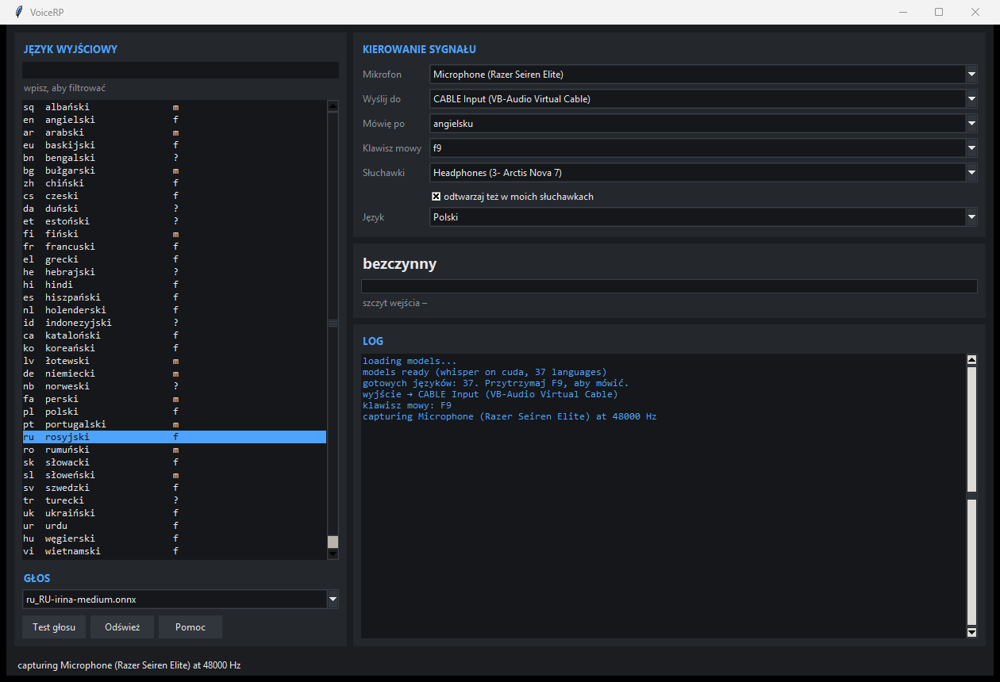

Trzymasz F9, mówisz po polsku albo angielsku — a na VON słychać rosyjski, ukraiński albo jeden z 37 języków, ok. 0,65 s później. Plus zmieniacz głosu na żywo. Wszystko działa lokalnie: bez kluczy API, bez opłat, żaden dźwięk nie wychodzi z komputera.
Mówisz po polsku lub angielsku, oni słyszą jeden z 37 języków. Rozpoznawanie mowy (faster-whisper), tłumaczenie (Argos) i synteza (Piper) na Twojej karcie graficznej.
Twoje słowa, czyjś inny głos — w czasie rzeczywistym (RVC przez VCClient), ok. 190 ms opóźnienia. Np. męski → żeński do odgrywania postaci.
Radiooperator, podoficer, zgorzkniały weteran, spanikowany, ranny, szept w budynku, słaby sygnał… Działają w każdym z 37 języków.

Interfejs po polsku lub angielsku, przełączany na żywo. Działa w Arma Reforger, Discordzie, Teams, OBS i przeglądarce — bo wyjściem jest domyślny mikrofon Windows.
Zmierzone, nie szacowane. Liczy się gra i VoiceRP naraz:
| Minimum (gra + tłumaczenie) | Komfortowo | |
|---|---|---|
| System | Windows 10 / 11, 64-bit | Windows 11 |
| Karta graficzna | 6 GB VRAM (GTX 1660 Super, RTX 2060) | 8–12 GB (RTX 3060, RTX 4060) |
| Procesor | 6 rdzeni | 8 rdzeni lub więcej |
| RAM | 16 GB | 32 GB |
| Dysk | 25 GB wolnego, SSD | SSD |
| Dodatkowo | Mikrofon, internet do instalacji, VB-Audio Virtual Cable (darmowy) | |
VoiceRP zużywa ok. 1 GB VRAM i 0,9–2,4 GB RAM. Karta 4 GB albo brak GPU: tłumaczenie działa na procesorze, ok. 1,2 s na zdanie zamiast 0,2 s. Pierwsze zdanie w nowym języku trwa 2–3,5 s (ładowanie modelu).
VBCABLE_Setup_x64.exe jako administrator, zrestartuj PC. To „kabel”, którym VoiceRP wysyła głos do gry.voicerp-setup.bat.models ready w logu (30–45 s). Wybierz mikrofon, język wyjściowy, trzymaj F9, powiedz jedno zdanie. Test głosu sprawdza trasę bez mówienia.Ustawienia → System → Dźwięk → Wejście → Twój mikrofon → Ulepszenia dźwięku = Wyłączone. „Voice Clarity” potrafi wyciszyć mikrofon do zera.
Szczyt wejścia w logu między -30 a -6 dB. Powyżej 0 dB = przester i whisper wymyśla całe zdania. Za cicho = nic nie słyszy.
Redukcja szumów = Brak, AGC i echo off. Krisp tnie syntetyczną mowę na kawałki.
Arma Reforger nie ma wyboru mikrofonu — bierze domyślne urządzenie komunikacyjne Windows. Ustaw je na CABLE Output (Panel dźwięku → Nagrywanie → CABLE Output → „Ustaw jako domyślne urządzenie komunikacyjne”). W Discordzie możesz dalej używać swojego prawdziwego mikrofonu.
mikrofon ──► VoiceRP (whisper → Argos → Piper) ──► CABLE Input
│
CABLE Output = mikrofon Windows
│
Arma Reforger VON · Discord · OBS| F9 | trzymaj, żeby mówić |
| F3 | następny język docelowy (wszystkie 37) |
| F1 | język źródłowy: angielski → polski → auto |
| F5 F4 F6 F7 F8 F2 | rosyjski / ukraiński / hiszpański / francuski / polski / angielski |
| F11 | lista języków i stan |
Wejście: polski lub angielski (polski tłumaczony przez angielski). Wyjście:
Brak japońskiego i tajskiego — silnik mowy Piper ich nie obsługuje. Tam, gdzie Piper nie ma żeńskiego głosu (m.in. niemiecki, portugalski, arabski), głos jest męski.
| Objaw | Przyczyna | Co zrobić |
|---|---|---|
W logu -120 dB, cisza | Voice Clarity albo mikrofon wyciszony | Wyłącz ulepszenia dźwięku; sprawdź przycisk MUTE/gałkę na mikrofonie |
| Transkrypcja nie ma nic wspólnego z tym, co mówisz | Przesterowany mikrofon | Zmniejsz poziom nagrywania do -30…-6 dB |
| Nic nie usłyszał, poziom OK | Za krótka wypowiedź | Powiedz pełne zdanie |
| Inni słyszą poszatkowane | Krisp / AGC w Discordzie | Wyłącz redukcję szumów |
| Inni słyszą Cię podwójnie | Zmieniacz głosu też pisze do kabla | Zamknij VCClient, gdy używasz tylko tłumacza |
whisper on cpu w logu | CUDA się nie załadowała | Działa, tylko wolniej (~1,2 s). Przeinstaluj z opcją CUDA |
%LOCALAPPDATA%\VoiceRP\voicerp-setup.bat -Languages ru,uk,pl,cs -Sources en,pl -Cuda
%LOCALAPPDATA%\VoiceRP\voicerp-setup.bat -AllLanguages%LOCALAPPDATA%\VoiceRP (na użytkownika, bez uprawnień administratora). Odinstalowanie: Ustawienia → Aplikacje → VoiceRP. Nie rusza Twojego Pythona ani PATH.